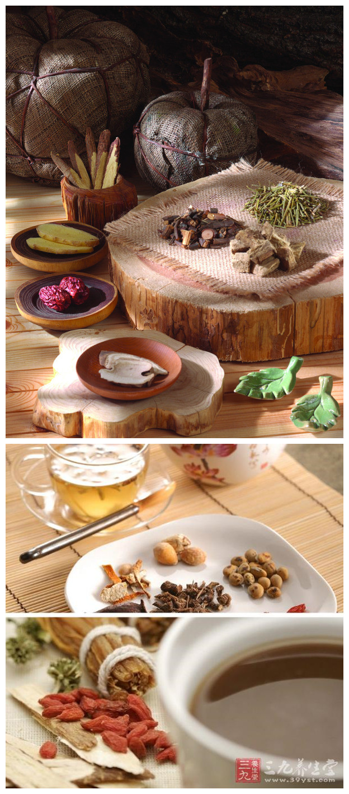

中医养身保健与健康
健康是人生最宝贵的财富，也是人类生存的基本要素之一。拥有健康是每个人的追求， 如果你珍惜生命和健康，那就从中药养身开始。建立健康的生活方式，掌握中药养生之道，坚持合理体 育锻炼，增强强壮体质、有病早治，未病早防，防治结合的理念。掌握一些中药养身保健知识，接受必 要的健康咨询与检查。对并发症、慢性病、后遗症等疾病的发生和治疗是良好的康复措施。
我们同和医院中医科保健养身经典治疗验方，有内服外用，泡茶、泡酒、煲粥、沐足， 内外结合并针灸推拿按摩中西结合，综合治疗计划，并根据身体素质，病理、病因、季节、年龄，性别 辩证用药，适时调配处方和治疗计划，使你身体恢复健康.
特别提醒：为了您的健康，当您用药时请在医生指导下对症用药，千万不要随意用药。
同和医院传统瓦罐煎药
中药煎煮质量的好坏直接影响药物治病的疗效，我国历代名医都十分重视中药煎煮方 法。汉代医家张仲景将煎煮用水分为雨水、千扬水等多种；徐灵胎认为：“煎药之法，最宜深讲，药之 效不效，全在乎此”；李时珍指出了药液煎煮不当的不良后果：“凡服汤药，虽品物专精，修治如法，而 煎药者鲁莽造次，水火不良，火候失度，则药亦无功。”这些都说明古人已认识到煎煮过程中有诸多因 素影响煎煮质量，而煎煮质量的好坏直接影响了中药药效的发挥。
温馨提示：本院采用传统瓦罐煎药，专业医师指导，独立包装，方便携带，药物效果好!
瓦罐煎药只收取成本价5元/付。

【健康小知识】 服用中药后饮食讲究
水肿病人：忌食硬固、油、生冷等食物。
服用发汗药：忌食用醋、生冷等食物
服用补药：忌茶叶、萝卜
热性病患者：忌食辛辣、香燥、油炸等食物
阴虚阳亢，时行热病，皮肤湿疹者：忌辛辣、海鲜、羊肉、白酒、葱蒜
红肿热痛：忌食牛羊、蟹、鱼等食物
头昏，失明，性情急躁，忌食胡椒、辛辣、酒
疾湿阻滞，消化不良，泄泻腹痛，忌生硬、冷、不易消化食物
伤寒温湿：忌食油腻肥厚、味甘食物
肝阳肝风，癫痫过敏，抽风患者忌食发物
肠胃功能弱者：忌粘滑油腻等食物
中药有蟹甲，忌食芥油芥菜
中药有荆芥，忌水产，动物
蜂蜜，忌大葱，豆腐
中药有灵仙，忌茶叶
>